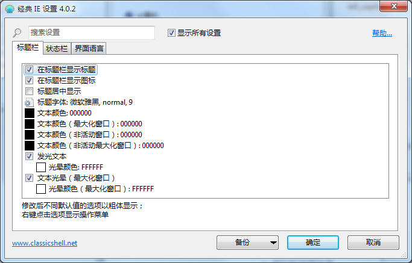
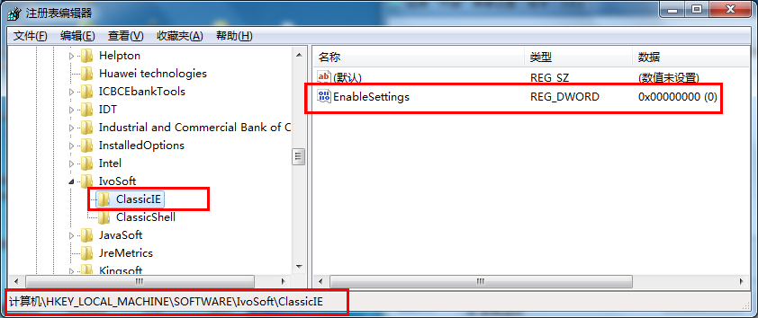

Classic IE
Classic IE
是Internet Explorer中的一个小插件:
- 添加一个标题在标题栏
所以你可以看到完整的标题的页面
- 显示在状态栏的安全区域
- 显示加载进度在状态栏
看到完整的网页标题当它不适合在选项卡:
看到进度和安全区域:
Installation
当您运行Internet Explorer后第一次安装
即它可能提示你经典,一个新的附加组件称为ClassicIEBHO被
安装如果你想启用它。点击激活按钮。如果
你没有得到一个提示,去 工具 - 管理插件 并确保ClassicIEBHO是启用的。在使插件正常工作你必须重新启动Internet Explorer来激活插件.
设置
你可以设置 工具 - 经典 IE 设置
或从开始菜单。设置控制颜色和字体
标题,什么信息来显示在状态栏.

你可以选择只看到基本的设置,或所有
可用的设置。鼠标悬停在每个设置看描述
它是做什么的。输入搜索框找到设置的名字。
每一个设置有一个默认值。默认值可以是常数,
或者它可能取决于当前的系统设置。一旦你编辑一个
设置它就变成了“修改”,并以粗体显示。要恢复到
默认值,右键单击设置.
你可以保存设置到一个XML文件,以及后来的负载他们回来。
按 备份 按钮来访问这些功能。从那里你可以
重置所有设置到他们的默认值.
按下OK保存您的设置。您需要重新启动Internet Explorer来应用这些新的设置.
Administrative Settings
这些设置是
每个用户和存储在注册表中。默认情况下每个用户都可以编辑
他们所有的设置。管理员可以锁定特定的设置,所以
没有用户可以编辑他们。这是通过添加设置 HKEY_LOCAL_MACHINE\SOFTWARE\OpenShell\ClassicIE 注册表键值.
你也希望不锁的设置,但只覆盖它的初始值。 然后添加 "_Default" 到注册表健值.
最简单的方式了解注册表名称的设置及其价值是修改它,然后检查HKEY_CURRENT_USER\Software\OpenShell\ClassicIE\Settings.
有时你可能想锁定设置为默认值,但你
不知道默认值是多少。然后创建一个DWORD值和设置
值为 0xDEFA.
这是一个全局设置EnableSettings. 将其设置为0的
注册表来防止用户打开设置对话框:
